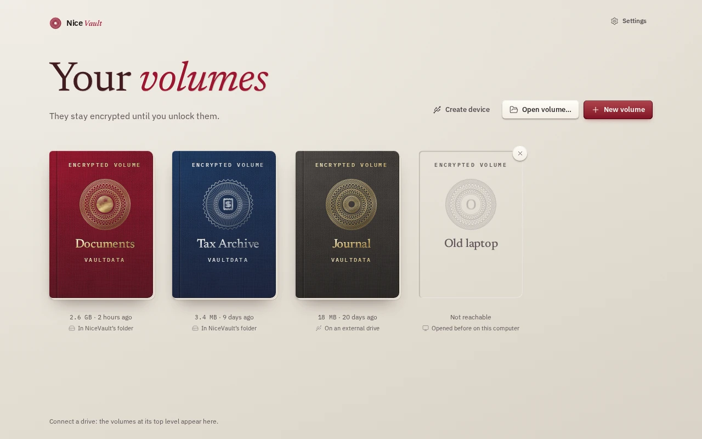
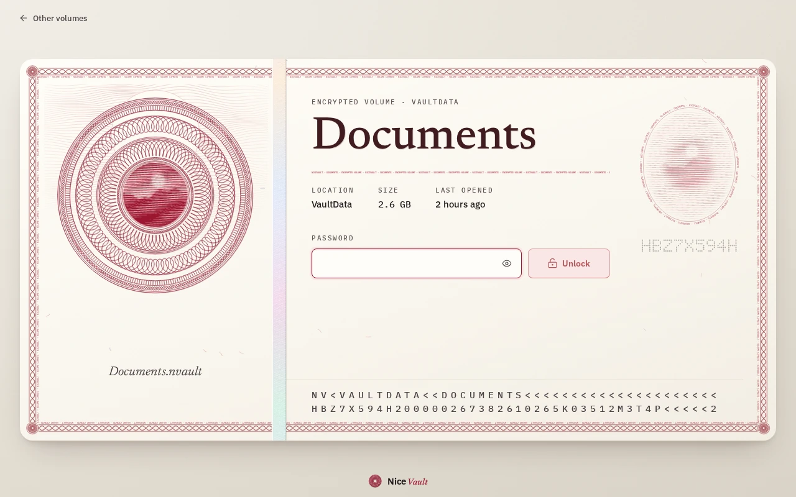
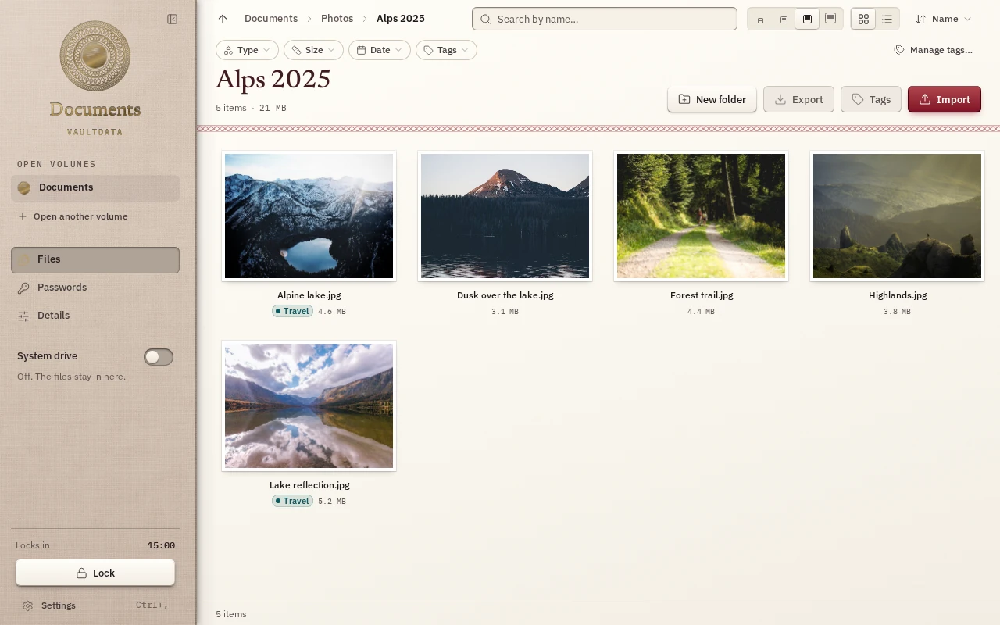
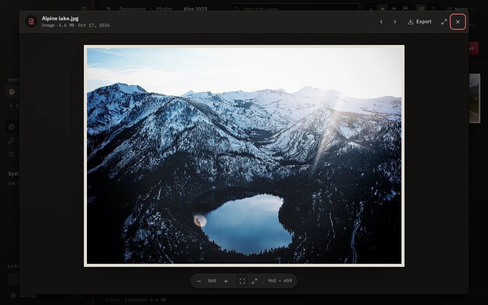
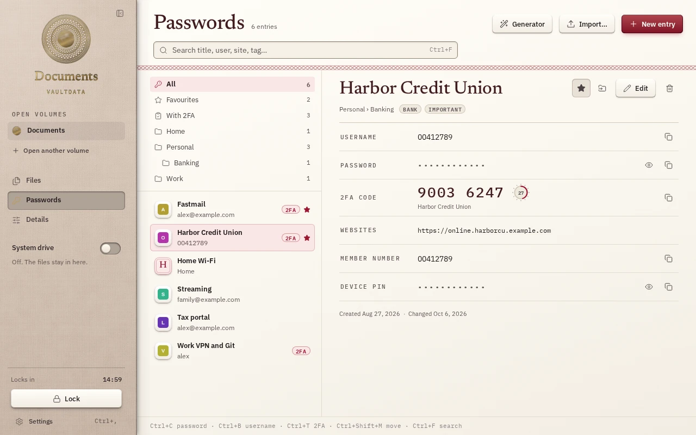
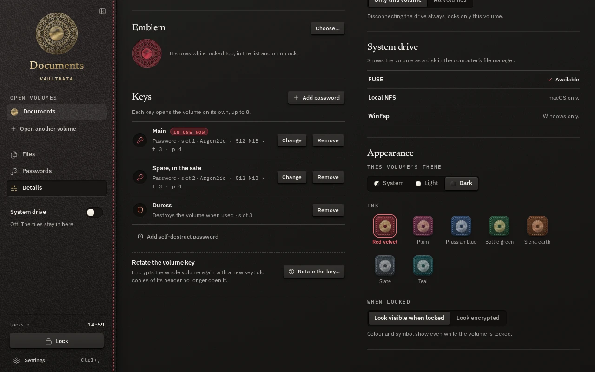
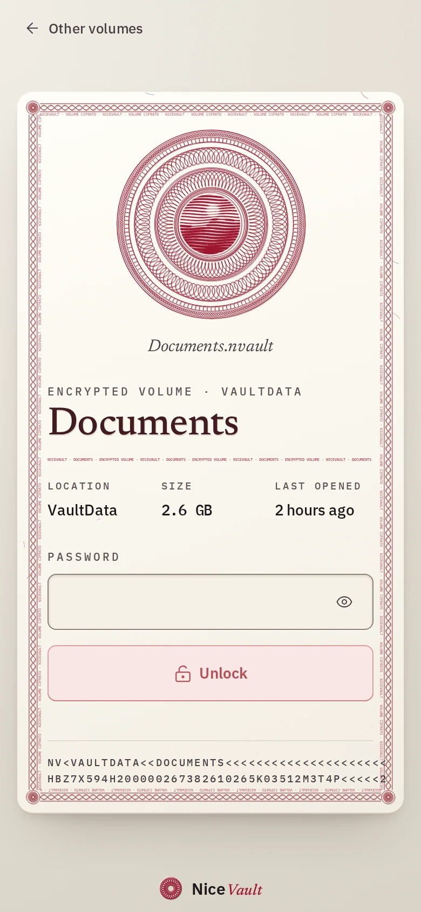
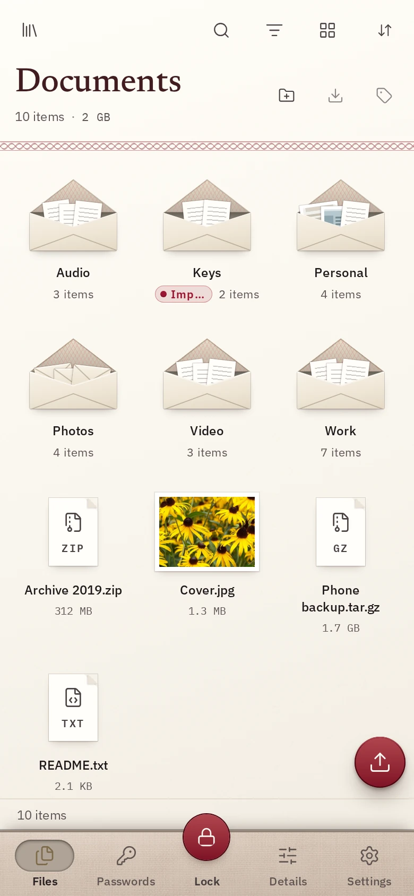

Encrypted volumes in a single file.
A NiceVault volume is one file. Copy it, back it up, carry it on a USB stick. Open it with a password on Linux, Windows or macOS and browse it in a built-in file manager.
Linux, Windows and macOS.
01 What it is
One file. Your files inside it.
Folders, file names, file contents, tags and passwords are all stored inside the .nvault file, encrypted. Without the password it is noise.
-
One file per volume
No side files. New volumes keep their journal inside, so the file you copy is the whole volume.
-
It travels on a stick
NiceVault can prepare a USB drive with two partitions: one holds the program for Windows, macOS and Linux, the other holds your volumes. Start it from the stick. Nothing is installed on the host.
-
No driver needed
The built-in file manager decrypts on the fly and previews files in memory. Mounting as a drive is optional: FUSE on Linux, a local NFS share on macOS, WinFsp on Windows.
-
Pulling the plug is fine
Writes go through a database transaction. After a crash or a yanked drive the volume opens in its last committed state. You can lose the last few seconds of work, never half a file.
-
A password manager inside
Logins and one-time codes (TOTP) live in the same encrypted database as your files. Import from Bitwarden, KeePass and CSV exports.
-
Several keys
Up to 8 passwords per volume, each changeable on its own. A duress password destroys the keys in the volume header, then fails like any wrong password.
02 Screens
The same file manager on every desktop.
Dark and light themes follow your system. Screenshots come from the app running against an in-memory demo volume. The sample photographs are CC0.

Volumes sit on a shelf as passports. Each can carry its own colour and emblem, even while locked.

The volume stays opaque until the password is right.

Grid or list, with thumbnails, tags and search by name. Import and export run as background jobs with progress and cancel.

Quick look decrypts in memory: images, audio and video, PDF, text and code, archives. Nothing is written to disk.

Logins with notes and custom fields, TOTP codes, a generator, and a clipboard that clears itself.

Keys, the duress password, key rotation and the look of the locked volume.
Phones in development
The same volumes, with a phone layout.
iOS and Android builds exist and run, but neither is on a store yet. These are the screens as they stand today.


03 Encryption
How the file is built.
Standard primitives, composed the usual way.
-
1
A random master key, wrapped once per password
Creating a volume draws a 32-byte master key. Each password slot stretches its password with Argon2id and uses the result to wrap the master key with XChaCha20-Poly1305. The default setting uses up to 512 MiB of memory and is measured on your machine so one unlock takes about 0.7 seconds. A volume holds up to 8 slots.
-
2
Every page of the database is encrypted and authenticated
The database key is derived from the master key with HKDF-SHA256. SQLCipher 4 encrypts each 16 KiB page with AES-256-CBC and authenticates it with HMAC-SHA256. File contents are stored in 256 KiB chunks. A read that finds a page failing its HMAC is an error, never zeros.
-
3
Two header copies, so one is always valid
The copies are written one after the other with a sync between. A checksum catches a torn copy and a keyed MAC checked after unlock catches tampering. The format is append-only: every release must open volumes written by earlier builds.
-
4
Keys stay in memory, and leave it when you lock
The master key is locked against swapping where the OS allows it and wiped when the volume locks. Core dumps are disabled. Previews are decrypted into memory and never written to disk. Auto-lock fires on idle, sleep, screen lock or when the drive disappears.
What it does not hide
- The file is recognisable: it starts with fixed magic bytes. There are no hidden volumes and no plausible deniability.
- Some header fields are plaintext: format version, volume id, number of key slots, the Argon2id parameters and, with the default look, the accent colour and emblem.
- The size of the file.
- An unlocked volume. Malware on the computer at that moment wins.
- Old copies. Changing a password does not change the master key, so an old copy still opens with the old password until you rotate the volume key.
- Rollback to an older copy of a volume cannot be detected from the file alone. The app keeps a counter per volume in installed mode and warns.
- No third-party audit. The code had an internal security review, and the findings were fixed or documented.
04 Downloads
Get NiceVault.
The latest release. All versions, checksums and signatures are on the releases page.
| Platform | File | State | Download |
|---|---|---|---|
| Linuxx86_64, AppImage | NiceVault-linux-x86_64.AppImage | Usable | Download |
| Linuxx86_64, tarball | NiceVault-linux-x86_64.tar.gz | Usable | Download |
| Windowsx86_64, a single .exe in a zip | NiceVault-windows-x86_64.zip | Usable | Download |
| macOSuniversal, ad-hoc signed app in a zip | NiceVault-macos-universal.zip | Not fully tested | Download |
- The binaries are not code-signed. Windows and macOS will ask you to confirm the first run. On macOS the app is not notarized, so Gatekeeper needs a manual approval.
- Windows uses the system WebView2. Mounting a volume as a drive needs WinFsp. Creating a device goes through a UAC prompt.
- On Linux, mounting a volume as a drive needs fusermount3. The built-in file manager needs nothing extra.
- On iOS and Android, see the status below. There is nothing to download yet.
05 Status
Where it stands.
NiceVault is young software. This is what works and what is still rough.
- Linux
- Usable The main development platform. File manager, mounting through FUSE, device creation through udisks2.
- Windows
- Usable
- macOS
- Builds, not fully tested Less exercised than Linux, and not notarized.
- iOS
- In development Runs when built from source and sideloaded. Not on the App Store.
- Android
- In development Runs on the emulator. Not on Google Play.
Not done yet
Sharing a volume by public key in the app (the core library has the slot type, the app does not expose it, so today sharing means sharing a password). Hidden volumes. FIDO2 keys. A browser extension for the password manager.
Privacy
No telemetry. The app goes online only to check for updates (switchable), to download the programs when you make a device, and, if you leave it on, to fetch site icons for the password manager.